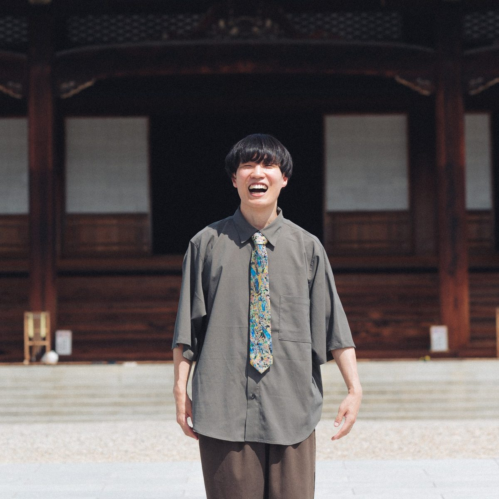

PROFILE
プロフィール

櫃割 仁平
JIMPEI HITSUWARI, Ph.D.
日本学術振興会 特別研究員 PD（関西大学）
ヘルムートシュミット大学 博士研究員
JSPS Postdoctoral Research Fellow, Kansai University
Postdoctoral Researcher, Helmut Schmidt University
京都大学大学院教育学研究科で博士（教育学）を取得し，現在はドイツ・ハンブルクのヘルムートシュミット大学で研究しています。専門は認知心理学で，研究テーマは美的感情や感性，芸術認知です。俳句やいけばななど日本の芸術を手がかりに，心理実験，脳機能計測，瞳孔などの生理指標，自然言語処理を組み合わせて，美しさを感じるこころと曖昧さへの態度，そしてその文化差を調べています。
I received my Ph.D. in Education from Kyoto University and now work at Helmut Schmidt University in Hamburg, Germany. My field is cognitive psychology, with interests in aesthetic emotions and art cognition. Using haiku, ikebana, and other Japanese arts, I combine behavioral experiments, brain imaging, physiological measures such as pupil size, and natural language processing to study how we feel beauty, how we face ambiguity, and how both differ across cultures.
POSITIONS
経歴日本学術振興会 特別研究員 PDJSPS Postdoctoral Research Fellow (PD), Japan Society for the Promotion of Science
受入研究機関: 関西大学 受入研究者: 石津智大 先生Host institution: Kansai University; host researcher: Dr. Tomohiro Ishizu
ヘルムートシュミット大学 人文社会科学部 実験心理学ユニット 博士研究員Postdoctoral Researcher, Experimental Psychology Unit, Faculty of Humanities and Social Sciences, Helmut Schmidt University
受入研究者: Prof. Dr. Thomas JacobsenPrincipal Investigator: Prof. Dr. Thomas Jacobsen
日本学術振興会 海外特別研究員JSPS Overseas Research Fellow, Japan Society for the Promotion of Science
日本学術振興会 特別研究員 DC2JSPS Research Fellow (DC2), Japan Society for the Promotion of Science
EDUCATION
学歴京都大学大学院 教育学研究科 博士課程 博士（教育学）Ph.D., Graduate School of Education, Kyoto University
Dissertation: The effect of ambiguity of haiku poetry on aesthetics: psychological and neuroscientific examination
Supervisors: Dr. Michio Nomura (Chair), Dr. Yusuke Takahashi, Dr. Takashi Kusumi
京都大学大学院 教育学研究科 修士課程 修士（教育学）M.A., Graduate School of Education, Kyoto University
Thesis: Psychological States and Individual Traits that Predict Aesthetic Evaluation of Haiku Poetry: from the Perspective of Emotion
Supervisors: Dr. Michio Nomura (Chair), Dr. Yusuke Takahashi, Dr. Tadashi Nishihira
京都教育大学B.A., Kyoto University of Education
Thesis: Effects of Being Moved on Psychological Change: Scale Development of Being Moved Experience
Supervisor: Dr. Hirotsugu Tazume
天理高等学校High School Diploma, Tenri High School
TEACHING
教歴京都外国語大学 非常勤講師Part-time Lecturer, Kyoto University of Foreign Studies
入門演習（PCスキル〔Word，Excel，PowerPoint〕／アカデミック・ライティング）Introductory Seminar (PC Skills: Word, Excel, and PowerPoint / Academic Writing)
京都大学 教育学部 ティーチング・アシスタントTeaching Assistant, Faculty of Education, Kyoto University
教育心理学実習Educational Psychology Practicum
ACADEMIC SERVICE
学術活動編集委員（Editorial Board Member）Editorial Board Member
Psychology of Aesthetics, Creativity, and the Arts (APA)
トピックエディター（Topic Editor）Topic Editor
Frontiers in Psychology, Research Topic “Cultural Diversity in Aesthetic Emotions: Concepts, Measurement, and Experience”
ハンドリングエディター（アドホック）Handling Editor (ad hoc)
Frontiers in Psychology: Cultural Psychology
編集委員会 コミュニティ査読者Editorial Board Reviewer (community reviewer)
Frontiers in Psychology: Cultural Psychology
アドホック査読Ad hoc reviewer
Psychology of Aesthetics, Creativity, and the Arts / The Journal of Creative Behavior / Empirical Studies of the Arts / Poetics / Scientific Reports / Psychological Reports / Psychology of Consciousness: Theory, Research, and Practice / Journal of Happiness Studies / Cognitive Science / Cognitive Processing / International Journal of Psychology / Frontiers in Communication / AI and Society / Discover Psychology / Discover Artificial Intelligence / Social Science Computer Review / Cogent Arts & Humanities / Human Arenas / Journal of Personality Assessment / SAGE Open Nursing / International Journal of Circumpolar Health / Cognitive Studies: Bulletin of the Japanese Cognitive Science Society
MEMBERSHIPS
所属学会国際経験美学会International Association of Empirical Aesthetics
日本感情心理学会Japan Society for Research on Emotions
日本心理学会Japanese Psychological Association
日本認知心理学会Japanese Society for Cognitive Psychology
日本認知科学会Japanese Cognitive Science Society
Cognitive Science Society
Association for Psychological Science
SKILLS
資格・スキル- 小学校教諭免許Teaching license for elementary school (Japan)
- 中学校・高等学校教諭免許（英語）Teaching license for English, junior high and high school (Japan)
- Statistics (SPSS, R, Python)
- Systematic review (PRISMA)
- Computer vision (OpenCV)
- Experimental software (PsychoPy, Qualtrics, Unipark)
- MRI experiments
- MRI analysis (SPM12 / SPM25, CONN toolbox)
- Resting-state functional connectivity
- Eye-tracking & pupil diameter (Tobii, ET-mono)
- Natural language processing (sentence embeddings / SBERT, topic modeling)
- Contextualized Construct Representation (CCR)
- Bibliometric analysis (co-citation, keyword co-occurrence networks)
- Qualitative coding & inter-rater reliability
- Semi-structured interview
- Epistemic Network Analysis (ENA) / Quantitative Ethnography
- Preregistration (OSF)
LABS
所属研究室ヘルムートシュミット大学 実験心理学ユニットExperimental Psychology Unit, Helmut Schmidt University
人文社会科学部（Thomas Jacobsen 研究室）Faculty of Humanities and Social Sciences (Head: Prof. Thomas Jacobsen)
関西大学 神経美学・芸術と感性の心理学ラボPsychology of Art and Neuroaesthetics Lab, Kansai University
文学部 心理学専修（石津智大 研究室）Psychology, Faculty of Letters (PI: Dr. Tomohiro Ishizu)
NETWORK
普段お世話になっている研究者のみなさま高野 了太Dr. Ryota Takano
名古屋大学Nagoya University
畏敬の念や物語を，心理実験，脳機能計測，自然言語処理など，さまざまな方法で研究しています。京都大学時代の研究室の先輩です。Studies awe and narratives with a range of methods, including psychological experiments, brain imaging, and NLP. A senior member of my laboratory at Kyoto University.
長峯 聖人Dr. Masato Nagamine
江戸川大学Edogawa University
ノスタルジアをはじめとする混合感情や，自己と時間について研究しています。日本感情心理学会で議論させていただいたのがきっかけです。Studies mixed emotions, especially nostalgia, as well as the self and time. We first discussed research at the Japan Society for Research on Emotions.
三國 珠杏Jan Mikuni
ウィーン大学University of Vienna
感性経験がどのように生まれ，こころと体の健康や人とのつながりを支えるのかを研究しています。ヨーロッパで経験美学を研究する仲間です。Studies aesthetic experience: how what we perceive becomes emotion and supports mental and physical health and social connection. A fellow empirical aesthetics researcher in Europe.
CONTACT
連絡先Experimental Psychology Unit, Helmut Schmidt University
Holstenhofweg 85, 22043 Hamburg, Germany